Общие настройки стиля объектов
Пункт Стиль в окне свойств слоя предоставляет необходимые инструменты для отрисовки и стилизации векторных слоев. При этом существуют символов и инструменты для работы с векторными данными в целом, а также специальные типы символов, предназначенные для различных геометрий объектов (точек, линий и полигонов).
Однако для всех видов векторных слоев процесс будет повторяться: в верхней части окна содержатся инструменты для классификации и настройки стиля, а в нижней - опции отрисовки слоя.
Общие типы стилей
Вне зависимости от типа геометрий в слое доступно 4 основных способа отображения объектов:
простой символ - позволяет отобразить все объекты слоя с использованием одного универсального символа;
уникальные значения - как правило, используется для категориальной или дискретной переменной с небольшим количеством значений, также может использовать выражение в качестве переменной;
градуированный знак - для задания символа в зависимости от числовой переменной, также позволяет использовать выражения;
правила - позволяет задавать символику на основе выражения.
Следует отметить, что в QGIS нет типа символа для непрерывных величин, так как здесь они рассматриваются как частный случай градуированного знака.
Уникальные значения
При использовании типа символа Уникальные значения в первую очередь следует выбрать переменную, по которой будет осуществляться классификация.
Для такого типа символов следует использовать категориальную переменную, то есть ту, которую нельзя ранжировать по возрастанию.
В качестве примера таких переменных можно привести:
тип здания по функциональному назначению - промышленное, жилое и общественное;
тип транспорта - автобус, трамвай, троллейбус;
тип почвы - чернозем, подзолистая, серая лесная и прочие.
Вместо непосредственно конкретной переменной может быть использовано выражение, что позволяет устранить необходимость создания отдельного атрибута исключительно для символизации слоя и использовать уже имеющиеся.
Отдельно может быть настроен Символ, который будет использоваться как базовый для всех классов (в первую очередь эта настройка будет касаться типа заливки и типа контура, а также некоторых других общих параметров).
Цветовой ряд используется для символизации разных категорий, кроме того этот тип символа позволяет использовать набор случайных цветов.
Так как тип символа базируется на использовании категориальных переменных, для которых предпочтительно использование цвета как основной визуальной характеристики, палитра случайных цветов в данном случае предпочтительнее, чем готовый градиент.
Автоматически при классификации будет создан пустой класс Другие значения, который впоследствии может быть заполнен объектами со значениями переменной, которых не было в изначальной классификации.
Градуированный знак
Градуированный символ может применяться только для числовых показателей, так как предполагает ранжирование по возрастанию и классификацию на группы.
Градуированные знаки могут использовать не непосредственно значение конкретного атрибута, но вычисляемое выражение.
Символизация на основе правил
В качестве правил при символизации выступают выражения, которые позволяют создавать собственные настройки отрисовки для определенных объектов, которые удовлетворяют заданным выражениями условиям.
Так, например, с помощью правила можно установить отрисовку только некоторых объектов соответствующих определенным условиям или исключить из отрисовки объекты, которые не должны быть отображены, или применить специальную символику и отдельные настройки, чтобы выделить на карте только некоторые объекты.
Выражения могут быть вложенными друг в друга, при этом выражения более низкого уровня будут применяться только к тем объектам, которые удовлетворяют условиям выражения более высокого уровня.
Типы стилей полигонов
Также как и для линейных объектов для полигонов доступна символизация с автоматическим объединением объектов, где кроме перечисленных выше исходных символизация добавлена символизация 2.5 D, о которой чуть ниже.

Уникальными только для полигональных объектов типами стиля являются:

- инвертированные полигоны (inverted polygons) - позволяет делать заливку не внутрь контура, а вовне. Также как и для символизации с автоматическим объединением объектов остальные типы стилей могут выполнять роль исходной символизации;

2.5 D - позволяет создать изометрическую проекцию для полигонов.

Источник: https://cartetika.ru/tpost/jc36y7ke41-izometriya-v-qgis-osvaivaem-25d
В изометрической проекции для полигонов доступна дальнейшая настройка символов аналогично символам стандартных полигонов.
Маски
Маски позволяют настроить наложение символов различных слоев. Это необходимо для улучшения читаемости карты и различения символов различных слоев.
Маски добавляют настраиваемый прозрачный слой вокруг объектов для того, чтобы скрыть часть символов текущего слоя.
В качестве слоя источника маски может быть задан только слой с точечными объектами. Для слоя источника маски он должен быть установлен как тип слоя символа в настройках стиля, а для того слоя, к которому маска будет применяться, он указывается в настройках маски.
Настройка стиля объекта в зависимости от атрибута
Рассмотрим настройку стиля объектов для жилых многоквартирных зданий по значению этажности.
Атрибут с этажностью - это building:levels, но напрямую мы его использовать не можем, так как это текстовый атрибут.
Если вы хотите узнать типы данных своих атрибутов, вы можете просто открыть свойства слоя на разделе Поля, где будут указаны все атрибуты с соответствующими типами данных.
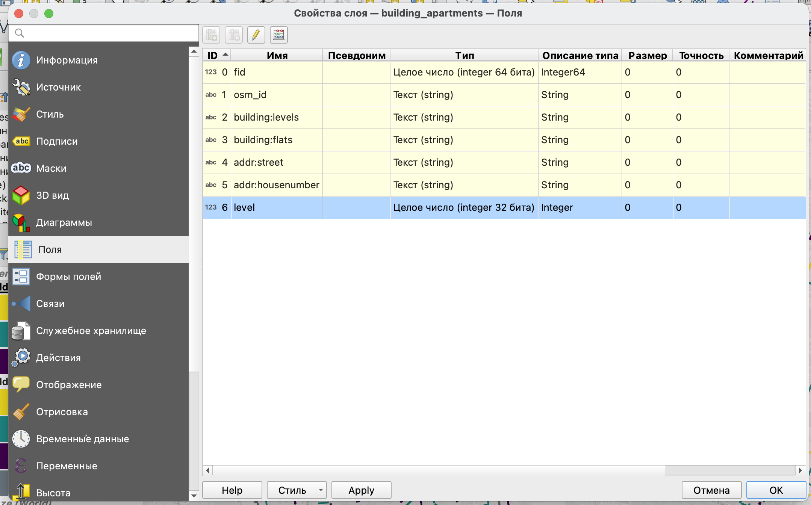
Также в самой таблице атрибутов есть небольшая подсказка: текстовые поля, как правило, выровнены по левому краю, а числовые - по правому.
Преобразование строки в число
Для создания нового атрибута с количеством этажей в числовом формате воспользуемся калькулятором полей. Он находится в таблице атрибутов на панели инструментов 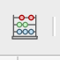.
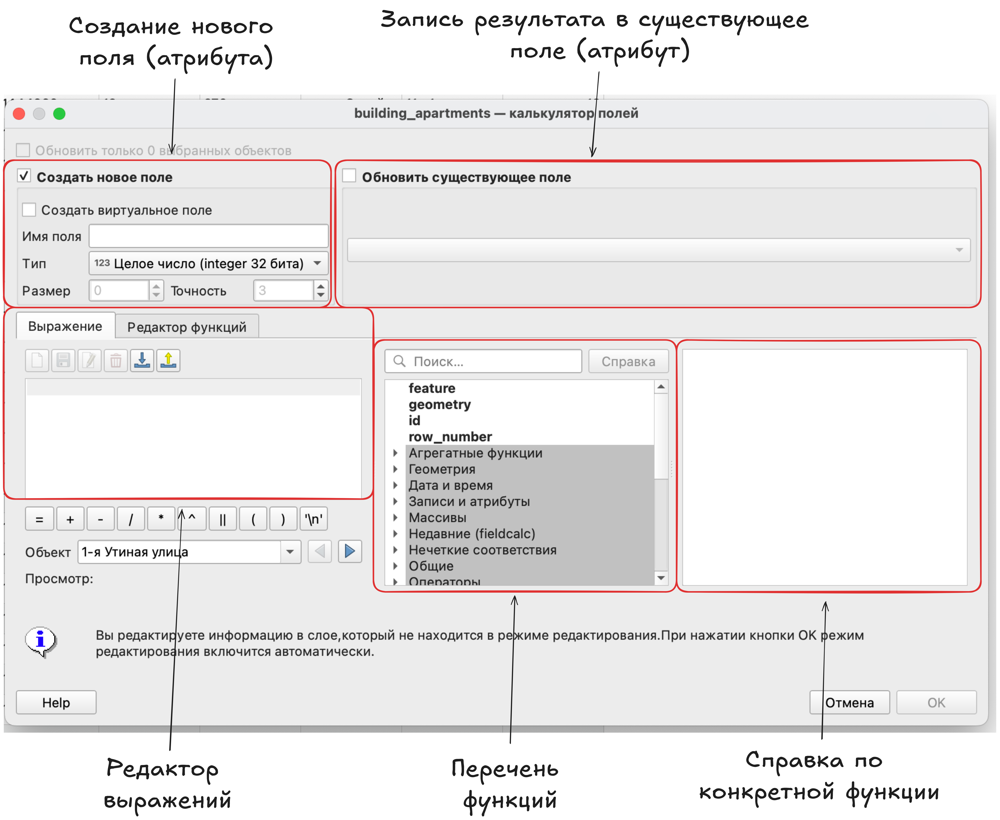
Если вы хотите создать новое поле, то для него нужно обязательно указать имя и тип данных, без этого поле создано не будет. Имя поля должно быть уникальным в пределах таблицы.
Если вы будете записывать результат в уже существующее поле (Обновить существующее поле), то удостоверьтесь, что тип данных этого поля соответствует типу данных, который будет получен в результате выражения.
Так как нам необходимо преобразовать один тип данных в другой, то необходима функция из группы Преобразования:
to_int("building:levels")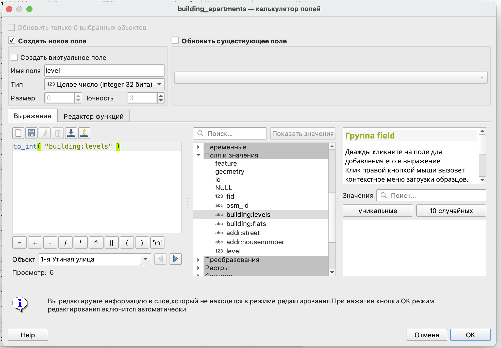
В качестве атрибута в эту функцию, необходимо передать строку, но так как нам нужно преобразовать все значения конкретного атрибута, то мы указываем название этого атрибута.
Для того, чтобы не ошибиться в написании названия атрибута/поля, лучше раскрыть группу Поля и значения в центре калькулятора полей и выбрать нужное вам двойным кликом.
Названия атрибутов/полей в выражениях указываются в двойных кавычках, а строки - в одинарных.
Если у вас в атрибуте этажности присутствуют значения типа ‘3.5’, то вы можете попробовать воспользоваться функцией to_real(), которая преобразовывает строку в десятичное число.
Только не забудьте указать тип данных для нового поля - десятичное число.
По результатам применения функции вы получите новое поле, в котором будет содержаться значение этажности в виде числа.
Подумайте, как преобразовать этажность с помощью выражения в тех случаях, когда она указана через дефис, например, “3-5”.
Попробуйте с помощью выражения заполнить пропущенные значения средним значением этажности.
Фильтрация данных
В вашей таблице скорее всего присутствуют пропущенные значения этажности, что же делать с ними? У нас есть несколько путей:
просто отбросить объекты с пропущенными значениями атрибутов;
найти этажность этих объектов в другом источнике и указать в таблице атрибутов;
проставить среднюю этажность в районе/квартале для тех домов, где она пропущена.
Мы воспользуемся первым способом, но не будем удалять объекты, а просто скроем их с помощью фильтра.
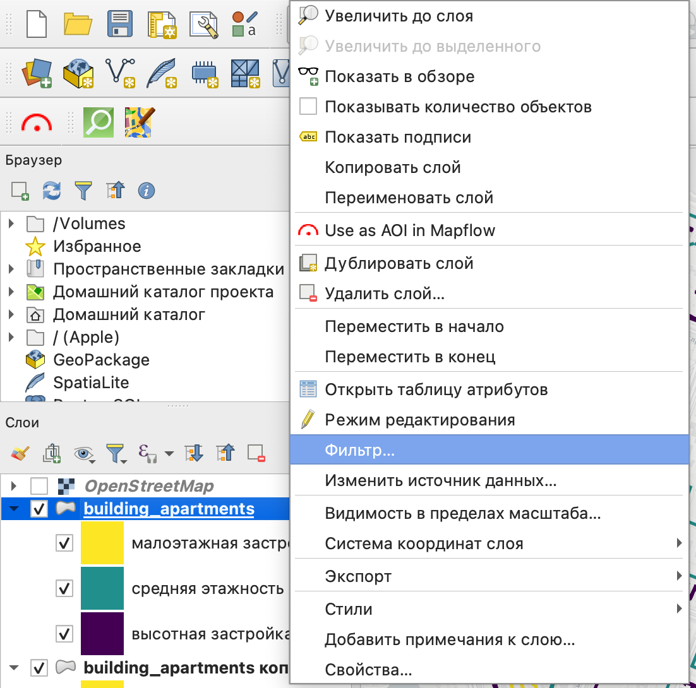
Функция фильтра доступна только для слоев, которые не находятся в режиме редактирования, поэтому необходимо сначала отключить режим редактирования (аналогично тому, как вы его включали), сохранив изменения, а потом воспользоваться фильтром.
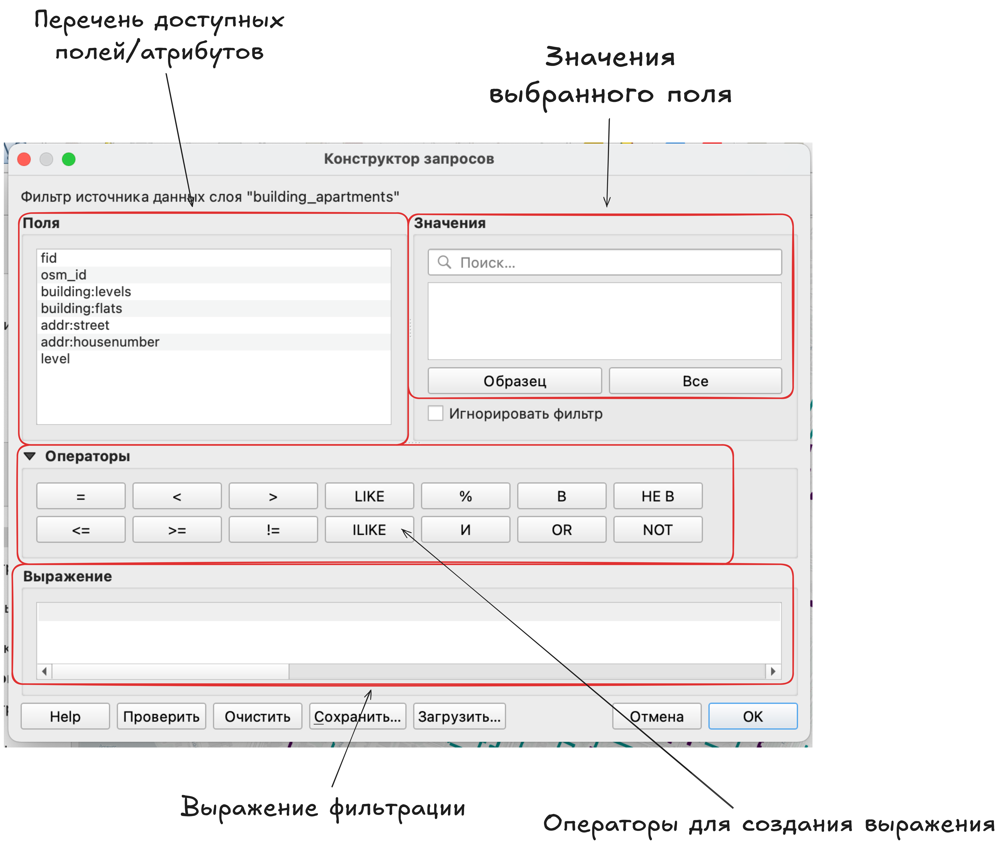
В нашем случае понадобится выражение:
"level" NOT nullЕсли это выражение не работает, можете попробовать альтернативное: "level" > 0.
После применения фильтра количество объектов на карте и в таблице атрибутов уменьшиться, перестанут отображаться объекты, не соответствующие условию в выражении фильтрации.
Также справа от названия слоя вы увидите значок 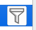, который предупреждает вас о том, что в этом слое включен фильтр.
Настройка стиля по диапазонам значений
Как было сказано выше, если мы хотим настроить стиль в зависимости от количественной переменной, необходимо воспользоваться типом стиля Символизация по диапазонам значений.
В качестве значений в данном случае будет выступать наш новый вычисленный числовой атрибут.
В значении не обязательно использовать конкретный атрибут, здесь также может быть использовано выражение.
Теоретически мы могли не создавать новый атрибут, а просто прописать в значении то же самое выражение, что мы использовали в калькуляторе полей.
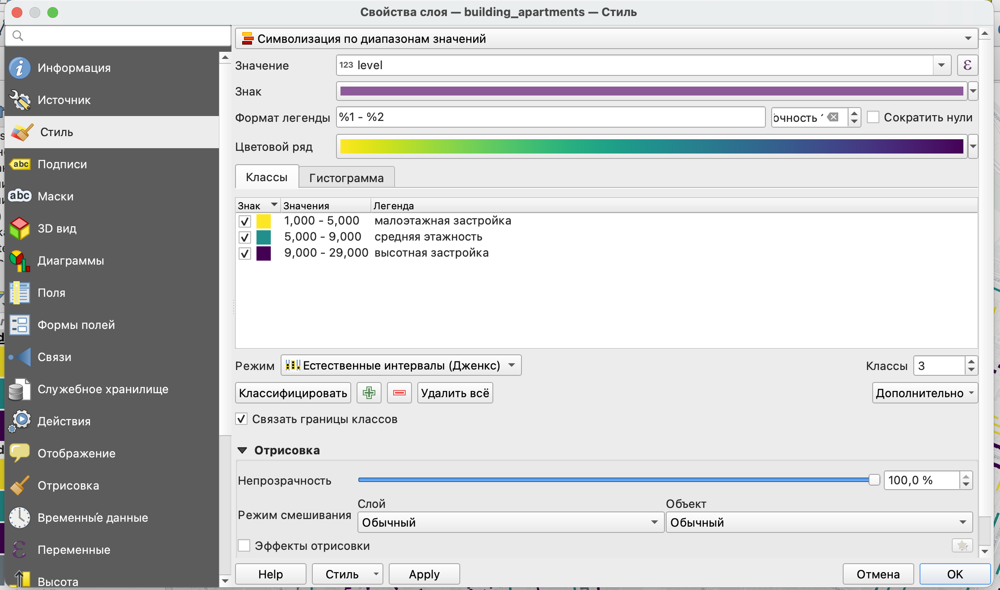
О методах классификации числовых данных мы с вами поговорим далее в курсе, а пока просто создадим классификацию зданий по этажности как указано на картинке выше.
Для того, чтобы вручную задать диапазоны, вам нужно дважды кликнуть в графе значения в нужной строке и ввести нижнюю и верхнюю границы диапазона.
Опция Связать границы классов автоматически изменит соседний диапазон, чтобы между ними не было пробелов.
Если вы хотите добавить или удалить классы, вы можете сделать это, воспользовавшись кнопками плюса и минуса, расположенными рядом с кнопкой Классифицировать.
Изменение текста легенды происходит аналогично ручному изменению границ классов: двойной клик в графе Легенда на нужной строке и введение нужного текста с клавиатуры.
Символизация на основе правил
Если вы все-таки хотите показать не только здания с известной нам этажностью, но и те, для которых этих данных нет, можно воспользоваться символизацией на основе правил.
Чтобы минимизировать работу, продублируем слой с уже настроенной символизацией на основе диапазонов значений.
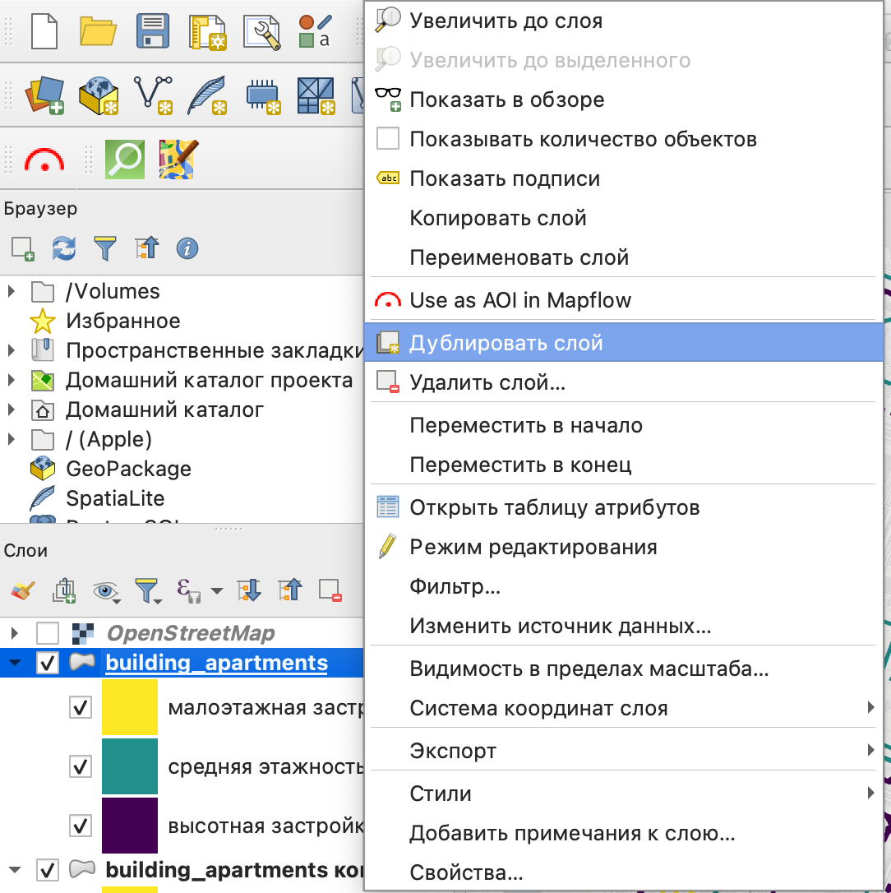
Дубликат слоя будет ссылаться на тот же самый файл, поэтому если вы будете что-то редактировать в нем (форму объектов, атрибуты), то изменения будут отображаться в обоих слоях.
Далее отключим фильтр слоя в полученном дубликате. Для этого откроем опцию Фильтр и нажмем Очистить.
Объекты с неизвестной этажностью у вас на карте пока не появятся, так как они не попадают ни в один из указанных диапазонов для задания стиля объектам, следовательно, не могут быть отрисованы.
Для полученного дубликата слоя выберем Символизация на основе правил. Так как у нас уже была настроена символизация по диапазонам первые три правила будут указана автоматически, вам необходимо добавить еще одно.
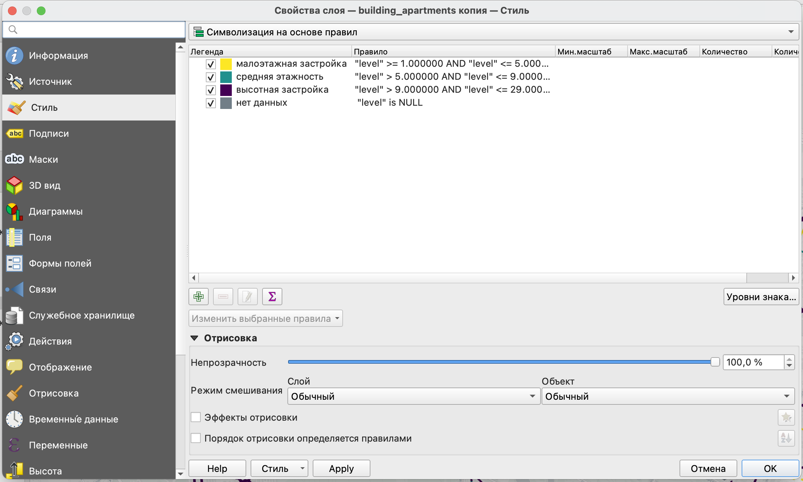
Для этого нужно нажать на , после чего в открывшемся окне указать подпись (то, что будет использоваться легенде) и выражение для правила: "level" is null.
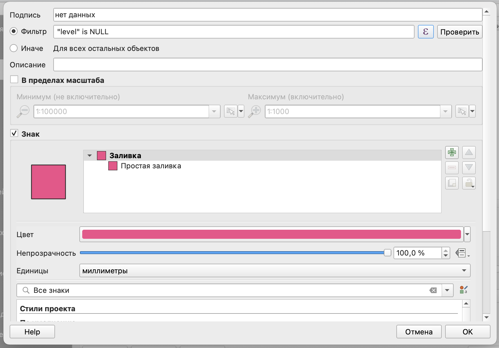
Для создания выражения, вы можете воспользоваться конструктором, который открывается нажатием кнопки . Этот конструктор аналогичен конструктору выражений в калькуляторе полей (за исключением создания нового поля или записи результата в существующее поле, так как это выражение не будет влиять на содержание таблицы атрибутов).
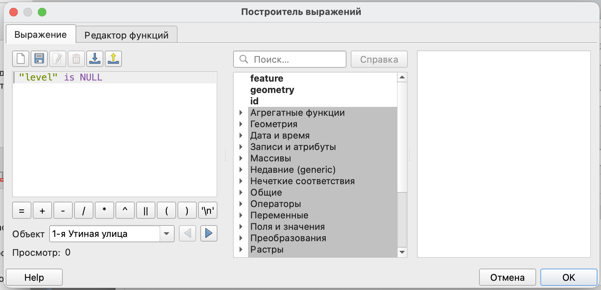
В окне для задания правила вы можете выбрать цвет заливки для этих зданий так, чтобы он отличался от остальных.
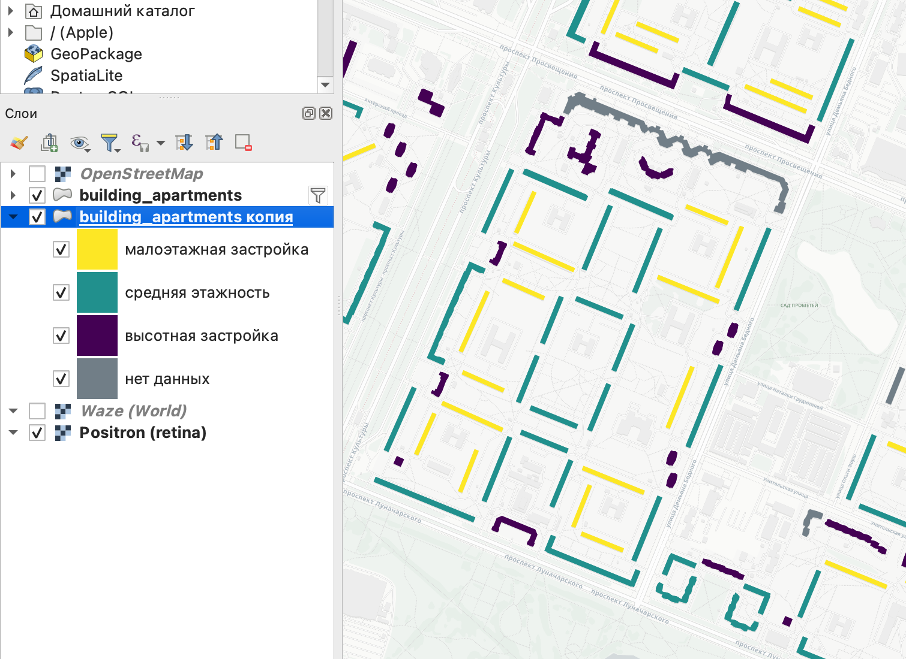
Импорт готовых стилей
В QGIS кроме того, что мы можем самостоятельно создавать и настраивать стили, можно импортировать уже готовые стили или экспортировать созданные1.
Это возможно благодаря тому, что описание стиля можно сохранить в формате XML.
Готовые стили можно скачать здесь или взять на гитхабе в подборке Топи Тюканова.
Кроме того, есть еще ресурс QGIS Style hub.
Обратите внимание, что некоторые стили могут иметь ограничения по типу объектов, к которым они применяются, и, в некоторых случаях, по типу системы координат, в которой должен быть слой.
Например, стиль слоя с выносками размеров применим только для слоев в прямоугольной (спроецированной) системе координат, так как он использует метрические единицы.
Как загрузить стили по ссылке можно посмотреть в видео:
Загрузка готовых стилей из файла происходит аналогично, отличие только в том, что в качестве источника выбирается не URL, а файл.
Также можно пользоваться плагином QGIS Resource sharing